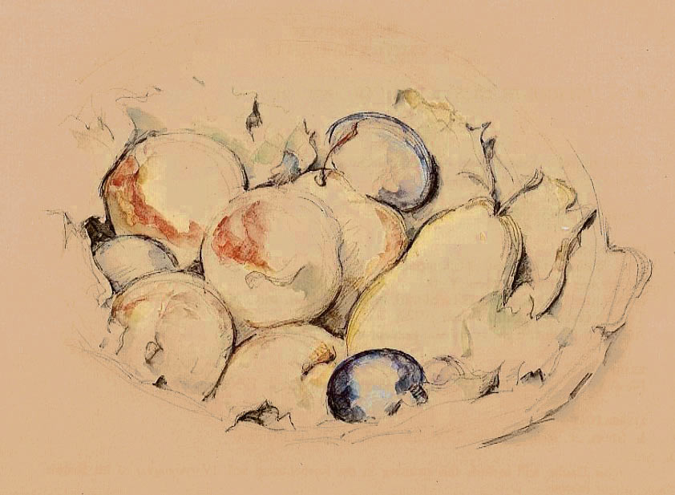

La Salud
La ruptura sentimental produce un efecto físico muy grave: falta de sueño, hormonas de estrés, problemas de alimentación, el letargo, la ansiedad...
El negar or ignorar los problemas físicos sólo empeora tu sufrimiento. La actividad más importante es cuidar de tu salud:
Duerme bien. Puede ser muy difícil dormir después de una ruptura, porque estás muy estresado/a emocionalmente y deprimido/a y esto no te permite conciliar el sueño. La falta de sueño sólo te destruye y hace que todo sea peor: estarás más susceptible para enfermarte, más susceptible para arruinar el resto de tu vida y sin duda hará que tu estado de ánimo sea más deprimente de lo que ya es.
Hay mucha controversia acerca de los somníferos. Hay muchos tipos diferentes, y cada uno tiene sus inconvenientes, a corto y largo plazo los efectos secundarios y posibles propiedades adictivas. Así que investiga y saca tus propias conclusiones basándote en tu situación.

Yo casi nunca tomo medicamentos, y estaba muy en contra de las pastillas para dormir específicamente... pero después de un mes de sólo obtener 1-2 horas de sueño seguido, varias siestas intermitentes en un día, después de mi ruptura, mi vida se estaba desplomando y me di cuenta que tenía que hacer algo para poder seguir funcionando.
Tenía miedo, pero me tomé pastillas para dormir y me ayudó. En mi caso, yo estaba tan triste y ansiosa (que estaba permitiendo que mi ex me tire de un lado a otro) que, aún con las pastillas sólo dormía 4-6 horas, pero al menos eso era suficiente para mí como para funcionar y no llevar mi vida a una completa auto destrucción.
Ejercicio. Tu mente y tu cuerpo están en shock. El estrés y los niveles de ansiedad se han disparado, lo que libera una mayor cantidad de la hormona cortisol. El ejercicio lucha directamente en contra de esta reacción de estrés mediante la reducción de tus niveles de cortisol.
Se mejora el sistema inmune a través del aumento de la producción de anticuerpos y células T. Ayuda a mejorar el sueño. El ejercicio fuerte (cardio-intenso, como correr o andar en bicicleta, jugar deportes intensivos, o levantar pesas) causa que el cuerpo produzca endorfinas (y posiblemente otras sustancias químicas.. no se entiende muy bien el mecanismo que bloquean el dolor y dan una sensación de felicidad y euforia).

Además, estar en forma y sentirte y verte bien realmente puede ayudar a tu autoestima, lo que es muy importante después de una ruptura.
Sé por experiencia personal que es muy difícil que encuentres motivación para hacer ejercicio cuando te sientas completamente devastado/a por una ruptura. Varias veces tuve que obligarme a mi misma para vestir la ropa de entrenamiento e ir al gimnasio, para luego sentarme frente a la bicicleta sin poder hacer nada. No tenía energía, todo era inútil, nada importaba y era una estupidez hacer ejercicio, bla, bla.
Una buena sugerencia para superar este problema es las actividades de grupo: clases de spinning, deportes de equipo, carreras de grupo, clases de yoga, cualquier forma de ejercicio que te guste. La presión externa te obliga a hacer el ejercicio. Además, disfrutarás de contacto social y de pasar tiempo con la gente y hacer algo más que hablar de tu ruptura.
Come bien. Lo que es interesante para mí después de haber leído tantas historias de ruptura es que muchas personas sufren de problemas de alimentación después de una ruptura, pero el tipo de problema alimenticio varía mucho. Algunas personas simplemente dejan de comer y pierden mucho de peso. Otras comen sin parar, ya que parece ser la única forma de felicidad que pueden sentir. Algunas personas se pasan comiendo comida chatarra, otros encuentran consuelo en platos de pasta. Algunas personas comen mucho y vomitan sin parar (no a propósito), ya que su nivel de estrés y angustia hacen que sea difícil mantener los alimentos dentro. Todo el mundo reacciona de manera diferente.
Independientemente de cómo se manifiesta tu problema de alimentación, es importante que sigas comiendo normalmente- no demasiado, no muy poco, sólo lo que es normal para ti. Si realmente quieres alimentos reconfortantes, no está mal pero solo un poco... ya que de kilos y galones de helado no van a solucionar tu problema solo te van a engordar y te sentirás peor contigo mismo.
Todas estas sugerencias sobre la salud pueden sonar muy obvias, pero he pasado por lo mismo y he visto muchas, muchas publicaciones de Internet escritas por dejados que sufren mucho debido a problemas de salud derivados del dolor de la ruptura. Así que en realidad " concéntrate en tu salud, es importante.